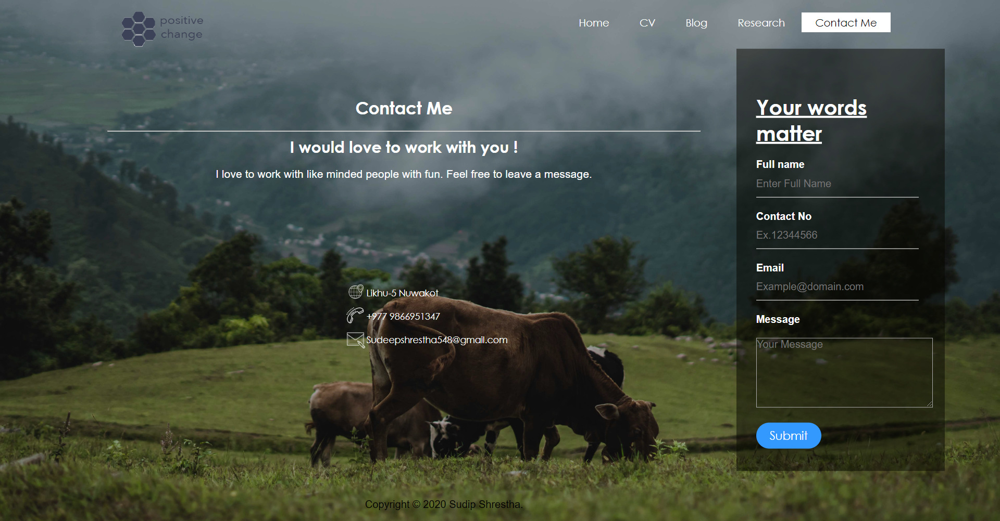

Research For Web Pages
Reference Home Page

To write home page of my website I did alot of research on how home pages should look and what typpe of information does homepage have. then I came across home page of viber's official site. then i liked the clean and simple design of their home page then i decided to go with the home page design of viber with alot changes in mine.
My Home Page
The design inspiration was from viber's home page. After that i cahnged pacement of the content design of the naviagtion bar, buttons footer and other dynamic content. the design inspration was from vibers home page but in my home page I changed many things i have it its own identity both the page is different and unique in its own way
Reference CV

This is the template that I used for my cv page. I find this template to me clean and nice. Which my choice of thing. I chose this simple template rather than a complex one because it is easy to understand and compliments over all look of my website and matches with my simple and clean look of the website. I didn’t copy entire cv from this template I also added my own idea and did change.
My CV page

I took inspiration from a cv template for my cv page. I took inspiration from that cv and changed a lot of things in my cv page. It is unique and different in its own way. I kept my cv page clean and simple which is really easy to understand. In my cv page there is all details about me from location to educational background .
Reference Blog Page

The above screenshot is from the blog page of official website of viber. In this webpage there is nav logo content with pictures which matches to my idea. So I took this webpage as my reference webpage for my blog page. I worked on this to make it look like same and distinct at the same time. It has few things in common and a lot thing different. It’s a reference of my blog page.
My Blog Page

This above screen shot is from my blog page. For my blog page I to reference from bines blog page. It was clean and nice. I make the clean looking page with a lots of important information. It not over crowded like other pages it has got important information with our making it over crowded. Visitors will enjoy and get benefits from the information present in the page. It most informative page among all the pages in my website.
Reference Research Page
For my research page I took reference from the same website from where I took reference for my blog page. In this page these is comparison between my page and references page. In this blog page these was divisions which is real helpful for comparing two pages with few things written with picture. Which makes the understanding easier and better in webpages. This screen shot represents the reference for my research page.
My Research Page

Above screen shot is from my research page which I made from taking reference from blog page of vibers website. In vibers website there was divisions which is ideal for comparing two different things. I made two divisions inside on division to compare two pages. Which is really easy to understand. And maes process of visiting a website more fun. This web page is clean simple and informative.
Reference Contact Me Page

The above screenshot is for the reference of my contact me page. I took reference from hyperquake’s contact me page. In this webpage there was information about the owner of the page and form to get in touch with the owner of he age which is the minimum requirement for any contact page so I took reference from there and made a webpage which resembles the looks of reference web page and still has its own identity.
My Contact Me page
The above screenshot if from my contact me page. For this page I took reference from hyperquake’s contact page. In this page you can see a form for message and details about the locations of the owner of the page which is really helpful to get in touch with the owner of the page. And which makes easy for visitors. All things are present in the contact me page as you would expect in a contact me page.